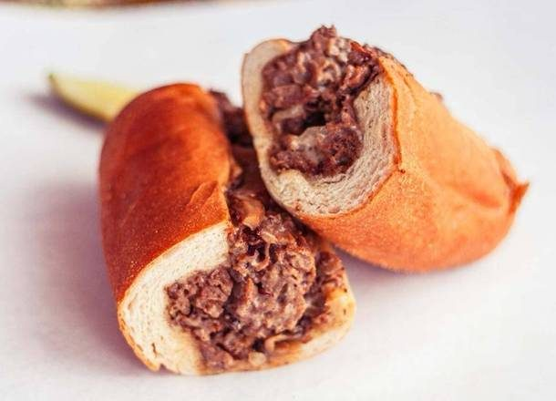
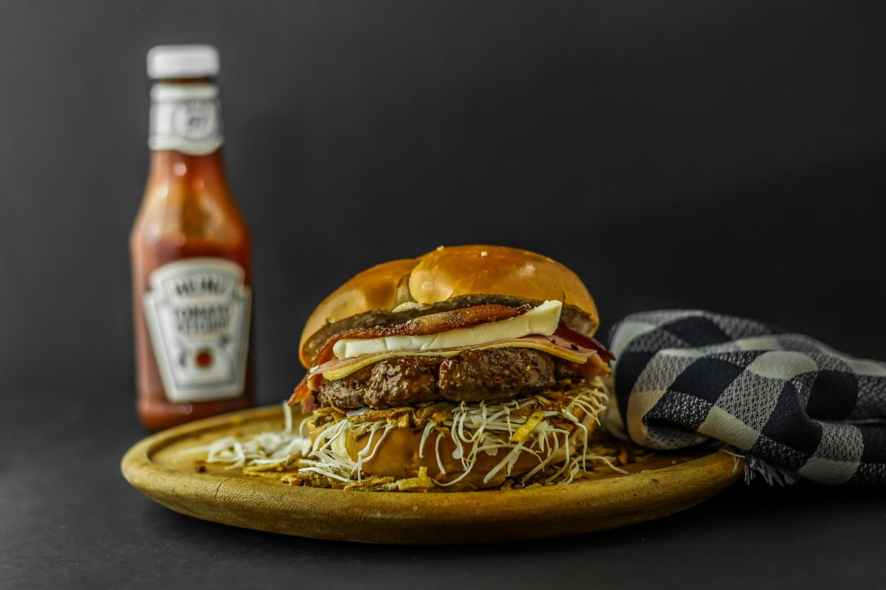

Old-school burgers in Pascagoula
Burgers, po-boys, and shakes
Kevin's Korner is an old-school burger joint on Market St in Pascagoula, serving lunch with a menu that runs from the pizza burger and chili cheeseburger to shrimp po-boys and milkshakes.
Old-school burgers in Pascagoula
Kevin's Korner is an old-school burger joint on Market St in Pascagoula, serving lunch with a menu that runs from the pizza burger and chili cheeseburger to shrimp po-boys and milkshakes.
Kevin's Korner sits at 1611 Market St in Pascagoula and serves lunch. The menu lists the pizza burger, chili cheeseburger, chili, fries, shrimp and roast beef po-boys, Philly cheesesteak, onion rings, and milkshakes.


1611 Market St, Pascagoula, MS 39567
Closing 5:00 PM Monday to Friday and 3:00 PM Saturday